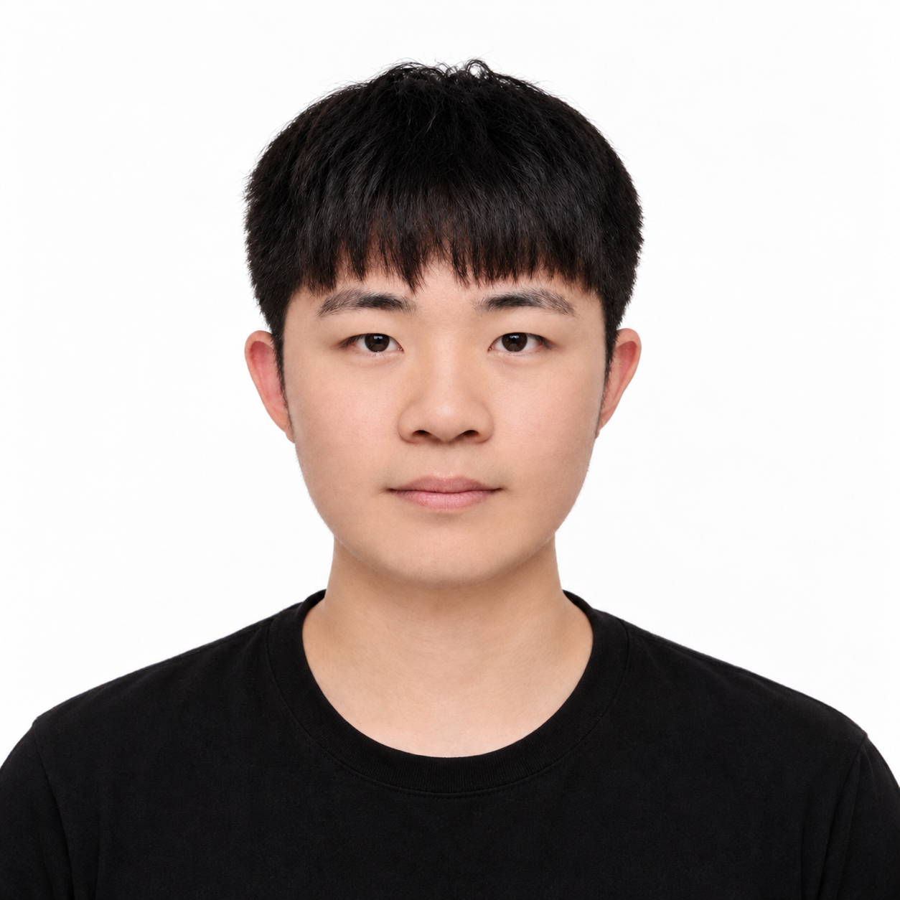

아주대학교
정보통신대학원
사이버보안 전공 · 석사과정 재학
문제를 정의하고, 모르는 것을 찾고,
알아가는 과정을 즐깁니다.

사이버보안 전공 · 석사과정 재학
컴퓨터공학 · 학사 졸업
정보통신공학과 졸업
대한민국 공군 국외 병과교육 대상자로 선발되어 미국 Keesler 공군기지에서 약 18주간 Cyber Systems Operations 과정을 수료했습니다. 미군 교육생 18명과 함께 영어 기반 기술 교육과 실습에 참여하며 Network, Windows, Linux, Active Directory, Cyber Defense 등 사이버시스템 운영 분야를 학습했습니다.
현지 홈스테이를 통해 미국의 생활과 문화를 경험했으며, 미 공군과 대한민국 공군의 교육체계를 비교·분석하여 국내 교육과정 및 구조 개선에 관한 귀국 보고서를 작성했습니다.
저의 호기심은 코드 안에만 머무르지 않습니다. 문제가 생기면 무엇을 모르는지부터 찾고, 질문을 따라가며 이해의 범위를 넓힙니다.
인간관계와 철학을 공부하는 일도 좋아합니다. 사람은 어떻게 생각하고, 우리는 어떻게 함께 살아가는지. 기술을 탐구할 때처럼 삶에서도 당연하게 여겼던 것에 질문을 던지고 싶습니다.
기술을 넘어 배움의 의미와 인간에 대해 고민하며 기록한 글입니다.